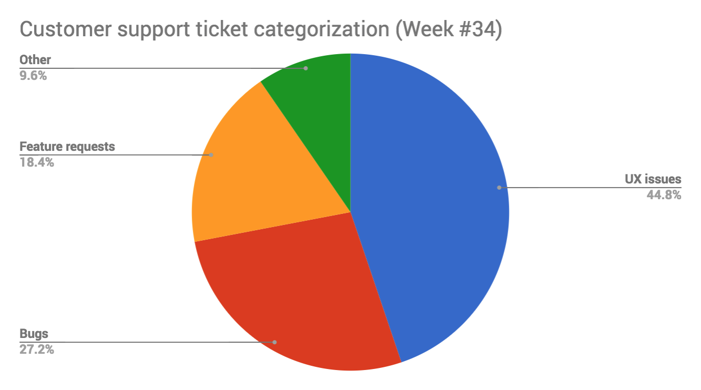
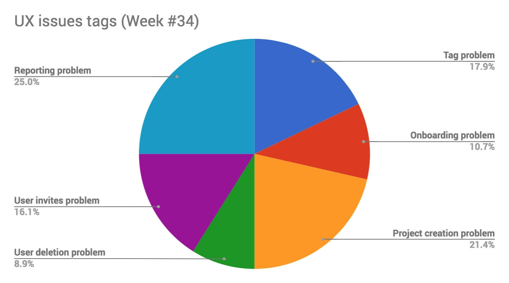

Customers don’t want to talk to us.
And whether we like this or not: it doesn’t matter.
Put yourself in their shoes: how many times do YOU want to talk to a support person?
You ever talked to someone at Netflix? Or Google? Thought so. They both work flawlessly, at scale. Most of us love their services and happily recommend them to friends. No support is best support, right?
That’s not how the world works though. In reality, they both employ tens of thousands of support agents. Because people have ever changing needs, wishes and desires.
What does this tell us?
The difference between the average companies and the best ones is in how they approach support requests. Is support’s main job to cover the shortcomings of the product? Or is it being close to customers, listening and ACTING on their feedback?
"Your most unhappy customers are your greatest source of learning." - Bill Gates
— David Cancel (@dcancel) August 21, 2013
Let’s dig into how the best product teams take advantage of their support requests.
It’s important to ask ourselves: why do our customers seek help in the first place?
A typical software product company might categorise the reasons for contacting support into 4 buckets:
Here’s an example of a pie chart you might be looking at at the end of the week:
Besides a category, I would apply a tag to each support ticket as well.
A tag should correspond to a common theme or problem that the request belongs to. Let’s say we’re building an imaginary project management system. Tags there might be:
This way it’s much easier for the product and customer support teams to spot recurring trends and decide what to work on.
An example tagging system at the end of the week:
Once you have the categorization and tagging systems in place, it’s crucial to actually use them. Educate your support staff on how to consistently and correctly categorise requests. Once they see that their thoughtful tagging results in product improvements, they’ll have no problem doing it.
Secondly, product and support should sit down at least bi-weekly and review the metrics and trends to decide what work on next.
Let’s go back to the beginning. Customer don’t enjoy contacting you. Yet they will contact you, because no product is perfect.
That’s why your product team should be responsible for owning the following metric:
Please note that this is only a KPI. It tells you HOW you’re doing. It doesn’t help you figure out WHAT you need to do to improve it.
To find out what to change in order to improve this KPI, you need to look into the tagged support tickets from above.
Then apply an obvious product prioritisation framework:
Please note: this is not a complete product prioritisation framework. It’s only useful for improving the number of support tickets/customer KPI. A comprehensive product prioritisation framework should take into account way more inputs that don’t only come from your existing customers (eg. prospects, market positioning, funnel metrics, etc).
When customers keep asking about the same issue over and over again, it means that something is fundamentally broken.
And the problem is actually two-fold. It leads to:
Customers have less patience than ever. Why? Modern sleek consumer products like Facebook, Netflix, iPhone have spoiled us all.
And because of it - your customer support has to actually be better than ever:
Here are some of the metrics that a modern customer support team should be tracking week over week:
Remember: want to improve all the above KPIs in one sweep? Then your best bet is to constantly improve the number of support tickets/customer KPI that we talked about before. This “organically” minimises customer frustration and gives your customer support more time. Time they can spend on supporting edge case scenarios, receiving valuable feedback and being trusted advisors.
Didn’t you just say customers don’t want to talk to us?
Sure I did. And yet, customers WILL talk to you.
Product perfection is a constantly moving goalpost. Once you improve something, customers will start asking for a new thing.
Product development never ends because solving problems for customers is a never ending journey. Each problem you solve leads you to the next one.
— Hiten Shah (@hnshah) May 5, 2018
For example: in the early days of Amazon, customers kept complaining about paying extra for shipping. It was one of the biggest friction points to more purchases.
And then a few clever people at Amazon came up with the concept of Amazon Prime. You prepay a small amount each year and in exchange you get free shipping for each purchase. And you get it in maximum 2 days.
It worked perfectly. People started to buy even more stuff on Amazon. But they wanted more. They wanted faster delivery. So Amazon introduced 1-day delivery. Again, it was great for a while. But then you get used to it. And you want it even faster. Now they are down to 2-hour deliveries in major cities. And I doubt they have any intention at stopping there.
Jeff Bezos, CEO of Amazon, puts it best: “Customers are divinely discontent… Their expectations are never static — they go up… It’s human nature.”
. @JeffBezos on the three tenets of running a customer centric company:
— Vala Afshar (@ValaAfshar) January 21, 2018
1. Listen to your customers
2. Invent for your customers
3. Personalize for each and everyone of your customers pic.twitter.com/cGW8soTBaq
Remember another CEO who was also famous for his direct customer feedback interaction? Steve Jobs. Stories about his frequent email exchanges with random customers have become somewhat legendary.
And now Elon Musk is taking customer feedback solicitation a step further. He publicly responds and talks to customers on Twitter - on a daily basis:
Thanks Ryan. Critical feedback after you get the car would be much appreciated, no matter how nuanced.
— Elon Musk (@elonmusk) May 22, 2018
The very best CEOs and customer obsessed companies love feedback. They know that while each support ticket is a failure of the current product, it is also the necessary input for the future product.
Ignore it at your own peril.